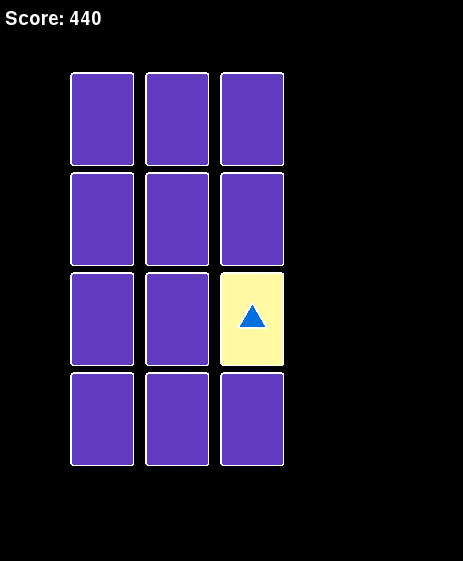
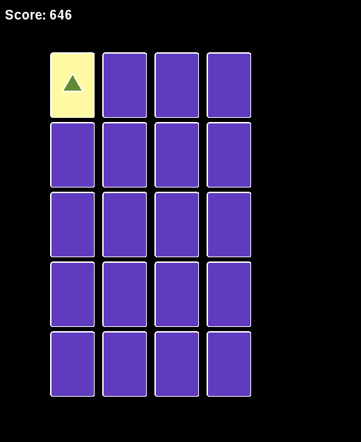

Our version of the classic game of memory, MatchIt game uses visual clues to create a challenging and stimulating game. The object of the game is to match two cards that share the same image, a simple task on small boards with a limited number of unique cards, but it quickly becomes much more difficult on larger boards. At the start of every game all of the cards are reset randomly, necessitating some guesswork to find out what’s where. This game is designed to randomly generate boards up to an infinite size, with each board being a unique arrangement of cards. This game is rich in custom art.
This is a fairly simple game in terms of gameplay, but it can be very taxing in terms of player involvement. The user interactions are very simple, tap a card to choose it, and after tapping two different cards they will both flip over and be compared. If they are the same they will be removed from the board and the player is one step closer to winning. If they are not the same then the player will lose time to complete the board. The object of the game is to match all of the cards in a given board without running out of time and advance to the next board. There are three boards in total. Each board contains more card-pairs than the last, making the game increasingly difficult. Players who complete all three levels win.
